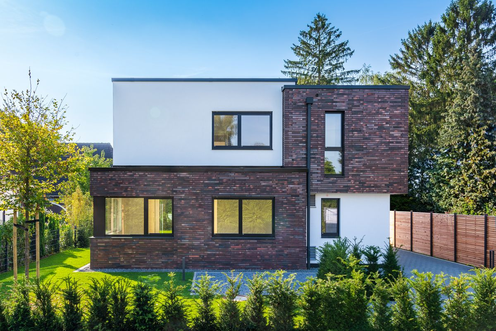
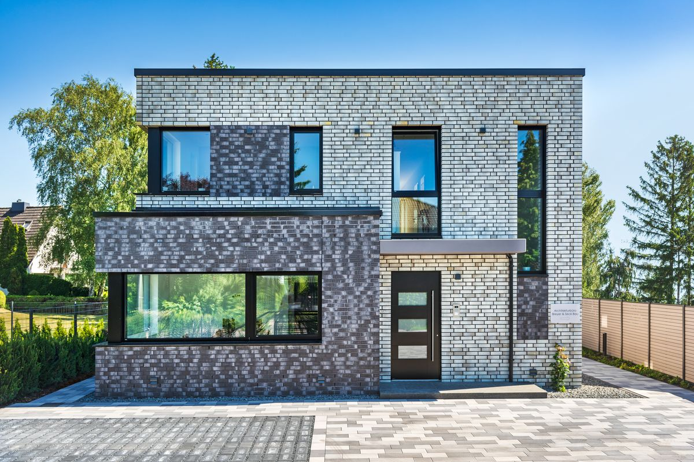
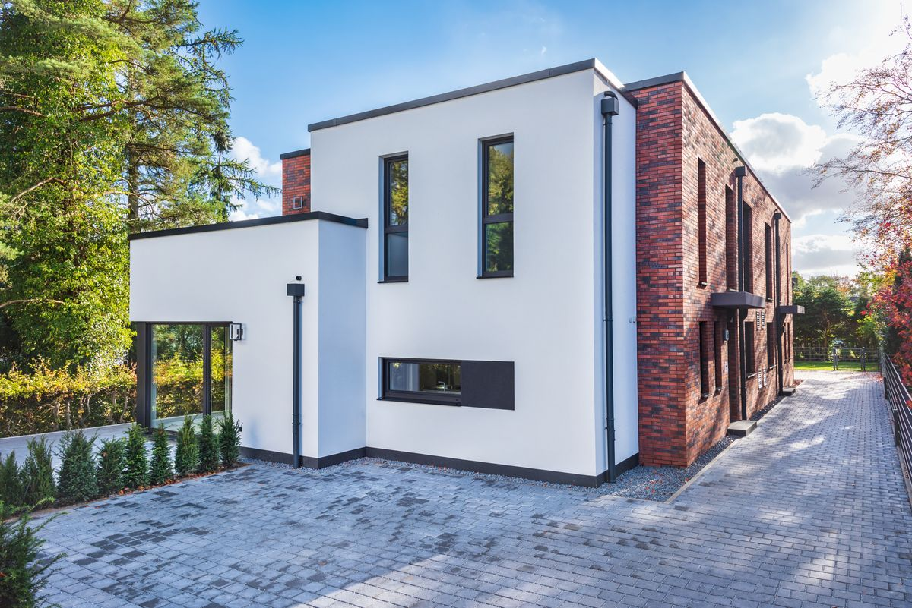
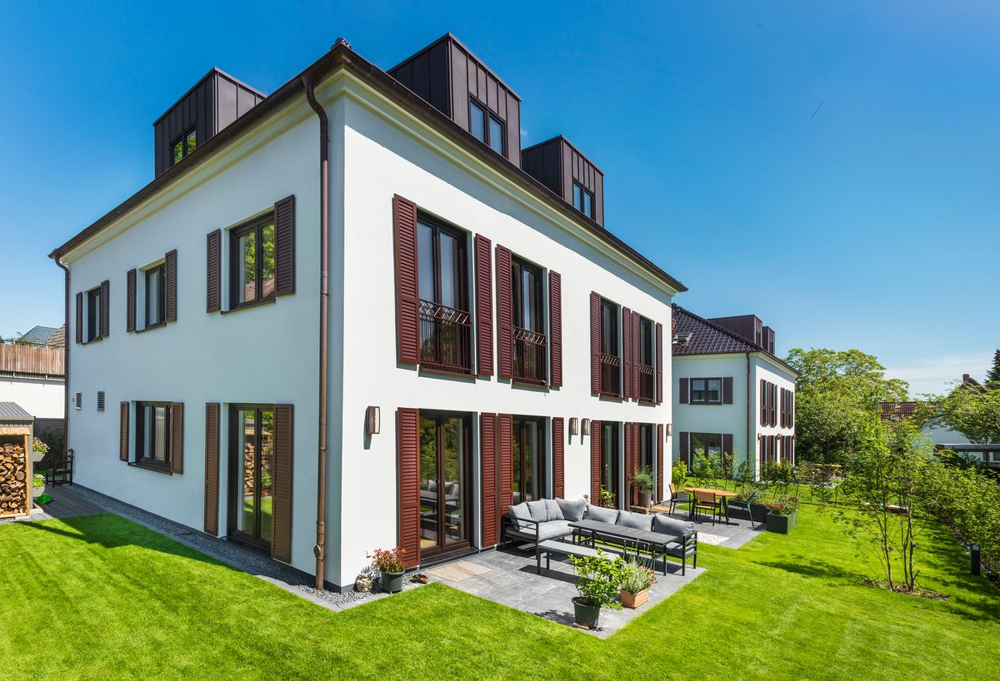
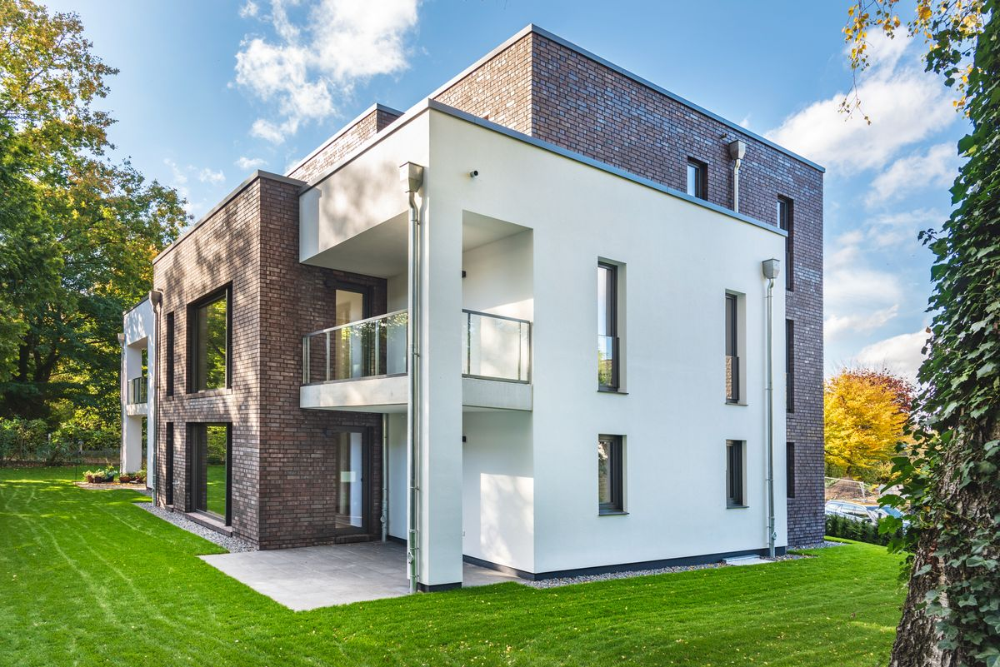

Referenzen
Einblicke in unsere bisherigen Wohnbauprojekte.

Franzosenheide
An der Franzosenheide haben wir zwei Einfamilienhäuser realisiert. Beide Häuser sind fertiggestellt und verkauft.
Mehr Informationen ↗
Herzog-Alf-Weg
Am Herzog-Alf-Weg haben wir ein Haus mit zwei Wohneinheiten realisiert. Das Projekt ist fertiggestellt und verkauft.
Mehr Informationen ↗
Bilenbarg
Am Bilenbarg haben wir ein Doppelhaus mit zwei Doppelhaushälften im vorderen Grundstücksbereich und ein Einfamilienhaus im hinteren Bereich realisiert. Das Projekt ist fertiggestellt und verkauft.
Mehr Informationen ↗
Wilsdorfallee
An der Wilsdorfallee haben wir ein Wohnbauprojekt realisiert. Das Projekt ist fertiggestellt und verkauft.
Mehr Informationen ↗
Saselwisch
Am Saselwisch haben wir ein Mehrfamilienhaus mit vier Wohneinheiten realisiert. Das Projekt ist fertiggestellt und verkauft.
Mehr Informationen ↗
Im Ginsterbusch
Im Ginsterbusch haben wir eine Doppelhaushälfte im vorderen Grundstücksbereich und ein Einfamilienhaus im hinteren Bereich realisiert. Das Projekt ist fertiggestellt und verkauft.
Mehr Informationen ↗